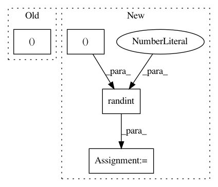

1c221934aaeab20ed5b6fa245b33b00a8b557533,tests/keras/backend/backend_test.py,TestBackend,test_rnn_no_states,#TestBackend#,815
Before Change
last_y1, y1, h1 = KNP.rnn(x, [wi, None, None], None,
go_backwards=False, mask=None)
last_y2, y2, h2 = K.rnn(rnn_fn, x_k, [],
go_backwards=False, mask=None)
assert len(h2) == 0
After Change
_, x = parse_shape_or_val((num_samples, timesteps, input_dim))
_, wi = parse_shape_or_val((input_dim, output_dim))
mask = np.random.randint(2, size=(num_samples, timesteps))
wi_k = K.variable(wi)
def get_step_function(backend, w_i):
def simple_no_states(inputs, states):
assert len(states) == 0
y = backend.dot(inputs, w_i)
return y, []
return simple_no_states
kwargs_list = [
{"go_backwards": False, "mask": None},
{"go_backwards": True, "mask": None},
{"go_backwards": False, "mask": mask},
{"go_backwards": True, "mask": mask},
]
for kwargs in kwargs_list:
check_rnn_operation(step_function_k=get_step_function(K, wi_k),
step_function_np=get_step_function(KNP, wi),
inputs_np=x,
In pattern: SUPERPATTERN
Frequency: 3
Non-data size: 4
Instances
Project Name: keras-team/keras
Commit Name: 1c221934aaeab20ed5b6fa245b33b00a8b557533
Time: 2018-11-29
Author: andhus@kth.se
File Name: tests/keras/backend/backend_test.py
Class Name: TestBackend
Method Name: test_rnn_no_states
Project Name: keras-team/autokeras
Commit Name: 0ff5e51fc622f02e1c434ad10642f03e36168433
Time: 2020-11-11
Author: jhfjhfj1@gmail.com
File Name: tests/autokeras/engine/tuner_test.py
Class Name:
Method Name: test_preprocessing_adapt_with_text_vec
Project Name: chainer/chainercv
Commit Name: f0b8fba7700a5e2a56b0d57af696118865e4b009
Time: 2017-05-04
Author: Hakuyume@users.noreply.github.com
File Name: tests/extensions_tests/detection_tests/test_detection_vis_report.py
Class Name: TestDetectionVisReport
Method Name: setUp